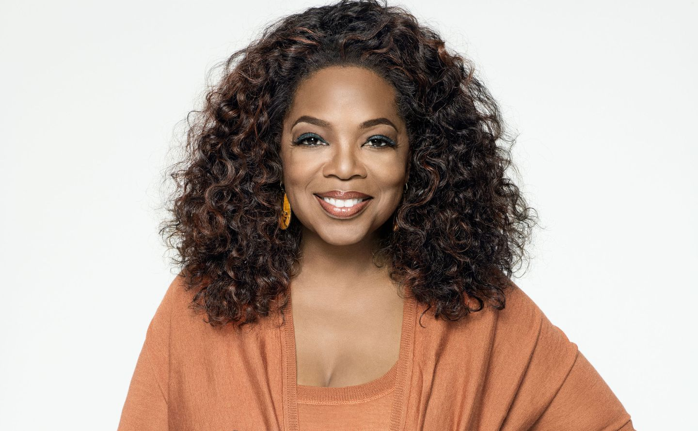
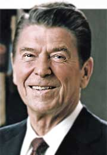
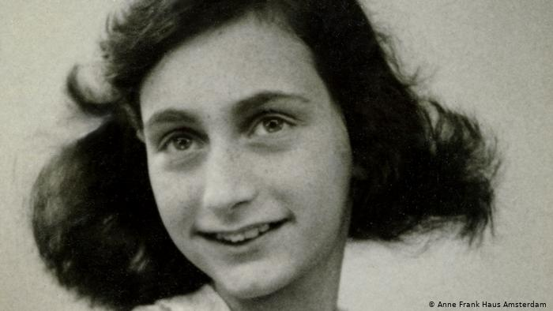

Oprah Winfrey
Verified Account
If you focus on what you do have in life, you will always have more. If you only see what you don't have, nothing will be enough
“Is an American journalist, television host, producer, actress, businesswoman, philanthropist, and book critic. She was a multiple
Emmy Award winner for her show The Oprah Winfrey Show, the most watched talk show in American television history. She is also an influential
book critic, Oscar-nominated actress and editor of her own magazine. ”

Ronald Reagan
Verified Account
We can't help everyone, but we can help someone
“Was an American actor and politician who served as the 40th President of the United States
from 1981 to 1989 and the 33rd Governor of California from 1967 to 1975. ”

Anne Frank
Verified Account
How wonderful it is that no one needs to wait a second to start improving the world
“Was a German girl with Jewish ancestry known worldwide thanks to the Diary of Anne Frank,
she spent two years hiding with her family and four other people from the Nazis in Amsterdam during the Second World War.”

Michael Jordan
Verified Account
I have missed more than 9000 thousand shots in my career. I have lost almost 300 games and on 26 occasions
I was able to make the basket that won the game and I missed. I have failed over and over again in my life.
And for that reason I have succeeded
“He is a former American basketball player, he played in the shooting guard position. He is considered by
most fans and specialists as the best basketball player of all time. He retired permanently in 2003 in the Washington Wizards,
after having done so on two previous occasions, in 1993 and 1999, after having played 13 seasons in the Chicago Bulls.”

Steve Jobs
Verified Account
The only way to do great work is to love what you do.
“He was an entrepreneur and business magnate in the American computer and entertainment industry.
He was the co-founder and CEO of Apple and the largest individual shareholder of The Walt Disney Company.
He founded Apple in 1976 with a friend from his teens, Steve Wozniak, with the help of Jobs' former Atari partner
Ronald Wayne in his garage. Boosted by the success of the Apple II, Jobs obtained a great public relevance,
being the cover of Time in 1982. He was 26 years old and already a millionaire thanks to the successful IPO of the company at
the end of the previous year.”